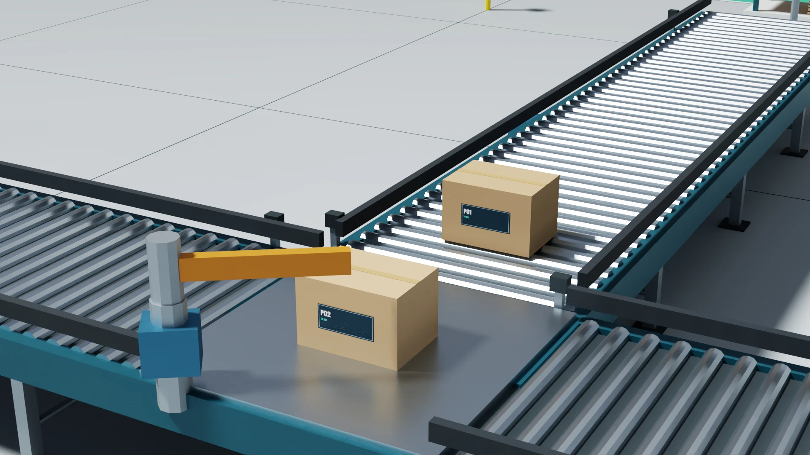
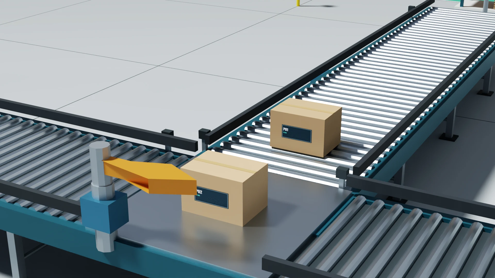

Evidence for the two scene builds
This selected collection accompanies What Two Scene Builds Revealed About 3D Acceptance. It shows the briefs, findings and repair evidence behind the article. The full scene deliveries and development evaluator are not included; see reproduction scope.
Follow the repair
- Read the issued dairy brief or distribution-centre brief, including its original reference images.
- Inspect the scripted results and separate review findings.
- Compare the redacted repair request with the producer response.
- Check the coverage and limitations, selected measurements, and runtime limits and controls.
Matched RTX views


The repaired version changes both indicator shape and schedule. These are optimized display copies of RTX captures. Separate source measurements establish route state and selected clearance; screen overlap alone is not a clearance measurement.
Explanation video
Show the delivered 30-second explanation video
Read the text description and measured events. The silent video uses Blender Cycles views of reopened USD and a synchronized explanation diagram. It is distinct from the native RTX stills. The original video bytes are preserved. Recorded review checked all 721 supplied state rows against USD readback and visually inspected ten decoded frames; all 720 video frames decode.
About this distribution
Correspondence is clearly labeled where local execution details or unavailable links were removed. JSON files are selected results and measurement excerpts, not the full per-subject reports. The scene renders are display derivatives; report text images use lossless conversion. The issued reference-artwork PNGs retain their exact bytes. The manifest lists the files and media provenance without local machine paths.